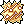
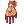
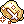

Inberun PvE Ranger Guide
| This guide has not been updated in a while. | ||
|---|---|---|
| Information on this page may be obsolete and outdated. Please refer to the author for information on future updates. Reason: "This Guide hasn't been updated since March 2017" |
||
| Ranger | |||||||||||||||||||
|---|---|---|---|---|---|---|---|---|---|---|---|---|---|---|---|---|---|---|---|
 | |||||||||||||||||||
| Job Base: | Archer | ||||||||||||||||||
| Written By: | Inberun | ||||||||||||||||||
| |||||||||||||||||||
Overview
Ranger is the third job class of Hunter/Sniper. Rangers are masters of bows and accompanied by their loyal Warg (Wolf). In term of gameplay they are probably the greatest class in PvM/PvE in term of self-sufficient and offensive. And one of the best for hunting field MvPs besides Geneticist.
Stats
- STR: Increases Carry Weight by 30, status ATK by 1 (for Daggers) and weapon damage with Daggers. Also increases Status ATK by 1 for every 5 points when using Bows
- AGI: Increases Flee and Attack Speed. Second most important stat for Ranger
- VIT: Increases soft DEF and total Health. Increases Resistance to Status Effect, and reduces their duration. It is recommended to have 100 VIT (Base + Bonus)
- INT: Increases soft MDEF, Status MATK, total SP, and reduces Cast Time
- DEX: Ranger’s most important stat, DEX increases HIT, status ATK by 1 (for Bows), and weapon damage with Bows. Also increases Status ATK by 1 for every 5 points when using Daggers. DEX reduces cast time and increases ASPD by a small amount. Most Ranger build should have at least 120 base DEX.
- LUK: For every 3 points, LUK increases Critical Rate by 1, Warg Strike chance by 1% , and status ATK by 1. And Perfect Dodge for every 10 points
Skills
These are important Skills for a PvM Ranger
First Job Skills
| Skill | Notes |
|---|---|
|  Arrow Shower | A really useful skill to use when you got yourself mobbed by multiple monsters |
| A single-target offensive skill that can be spammed, useful for early game | |
| A self buff that increases AGI/DEX by 3% at level 1 and 12% at level 10. Casting it will also reveal hidden enemies nearby. | |
| Increases DEX by 1 per level | |
| Increases HIT and Range by 1 per level | |
| Create Arrows with materials |
Second/Trans Job Skills
| Skill | Notes |
|---|---|
| Beast Bane | Increases ATK on Brute and Insect monsters |
| Useful for immobilizing powerful mobs. Snared enemies are affected by | |
| Freezing Trap | Inflicts water damage and has a chance to freeze enemy that steps on it |
Disarms traps and recovers  Special Alloy Trap Special Alloy Trap
| |
| Spring Trap | Same as |
| Falcon Eyes | A powerful buff that boosts all stats, ATK, HIT, and Critical Rate |
| Increases Movement Speed and FLEE for the user and everyone in the party |
Third Job Skills
| Skill | Notes |
|---|---|
| Increases Trap skills damage, set range, INT, and SP | |
| A powerful single target skill. If used on target that is being affected by | |
| Arrow Storm | Ranger's signature skill. Powerful burst AoE attack |
| Adds a chance to shoot additional arrows with normal attack, consumes extra arrows | |
| Increases ranged damage by 250%. Has long Cooldown. | |
| Hides yourself from the enemies (with the exception of Insects, Demons, and Boss-types) and allows movement at high levels. Also increases the damage of your first hit | |
Summons or discharges your Warg. Requires  Wolf Flute Wolf Flute
| |
| Orders your Warg to strike at a target. Can be used while riding Warg. Also can be automatically triggered with normal attack, each 3 points of LUK increases the chance by 1% | |
| Mounts Warg for extra movement speed. Can't attack while riding but can use Warg Strike | |
| Increases |
Equipment
Uppers
| Item | Type | Way to obtain | Notes |
|---|---|---|---|
| Sniper Goggle [1] | Upper + Middle | Job Changer | Free Reward from Job Changer |
 Rideword Hat [1] Rideword Hat [1]
|
Upper | Quest | HP/SP leech, useful for farming |
 Airship Captain's Hat [1] Airship Captain's Hat [1]
|
Upper | Cash Shop | Good all-around upper headgear. Can be shared with other classes |
 Fox Ears Bell Ribbon [1] Fox Ears Bell Ribbon [1]
|
Upper | Cash Shop | Good for Auto-Warg Build |
 Autumn Headband [1] Autumn Headband [1]
|
Upper | Cash Shop | Good for Aimed Bolt Build |
 Ancient Gold Ornament [1] Ancient Gold Ornament [1]
|
Upper | Wolfchev's Laboratory or Biolab Gear Exchange | Expensive but good end-game upper headgear for Ranger |
Middles
| Item | Type | Way to obtain | Notes |
|---|---|---|---|
| Binoculars [0] | Middle | Quest | Easy to obtain |
 Sigrun’s Wings [0] Sigrun’s Wings [0]
|
Middle | Cash Shop | Can be shared with other classes |
 Black Frame Glasses [1] Black Frame Glasses [1]
|
Middle | Cash Shop | Probably best slotted middle headgear for Ranger (and fashionable). |
 Cyclops Glasses [1] Cyclops Glasses [1]
|
Middle | Owl Viscount and Owl Marquis in Nightmare Clock Tower Floor 3 | Cheapest slotted middle headgear |
Lowers
| Item | Type | Way to obtain | Notes |
|---|---|---|---|
 Well-Chewed Pencil [0] Well-Chewed Pencil [0]
|
Lower | Cash Shop | DEX and Hit bonus are useful if you use  Gigantic Bow [1] Gigantic Bow [1]
|
 Gangster Scarf [0] Gangster Scarf [0]
|
Lower | Quest | Cheap and easy to acquire |
 Spare Card [0] Spare Card [0]
|
Lower | Cash Shop | Useful when you have to farm a lot of materials and loots. Blank Card can be exchanged into goodies in 2nd floor Main Office |
 CD In Mouth [0] CD In Mouth [0]
|
Lower | Cash Shop | Add extra DPS for Auto-Warg build |
Armors
| Item | Type | Way to obtain | Notes |
|---|---|---|---|
 White Wing Suits [1] White Wing Suits [1]
|
Armor | Anubis in Sphinx 4th and 5th Floor or Exchanging Mora Coin | Best all-around Armor for Ranger even without the whole set due to the 2% ranged damage per refine bonus |
| Sniping Suit [1] | Armor | Bow Master in Thor Volcano 1st Floor and 3rd Floor | Reduce After-Cast Delay |
Weapons
| Item | Type | Way to obtain | Notes |
|---|---|---|---|
| Hunter Bow [0] | Weapon | Sold by Weapon Dealer in Payon | Really good starting weapon and you can use it immediately right after changing to Hunter. Use with  Hunting Arrow for the combo damage Hunting Arrow for the combo damage
|
 Elven Bow [1] Elven Bow [1]
|
Weapon | Gargoyle in Glast Heim Sewer Area | Easy to obtain, a direct upgrade from Hunter Bow. Use with  Elven Arrow for the combo damage Elven Arrow for the combo damage
|
 Bow of Storm [1] Bow of Storm [1]
|
Weapon | Awakened Ferre (MvP) or Exchanging 50 Tooth of Jitterbug in Nightmarish Jitterbug Instance | The poor-man version of Gigantic Bow [1]. Still a very effective weapon and a lot cheaper to buy from market.
|
| Gigantic Bow [1]
|
Weapon | Awakened Ferre (MvP) or Exchanging 50 Tooth of Jitterbug in Nightmarish Jitterbug Instance | Really good weapon. High bonus ranged damage and can use any arrow type make it the most versatile bow |
 Giant Crossbow [2] Giant Crossbow [2]
|
Weapon | Cecil Damon in Biolab 3rd Floor, Gypsy Trentini (MvP) in Biolab 4th Floor, and High Weapon Box | At high refined level (+10 or above) this bow is a monster for Arrow Storm Build but hard to obtain and requires to be refined over +10 to be effective. |
 Crimson Bow [2] Crimson Bow [2]
|
Weapon | Owl Baron in Thanatos Tower 6th Floor | At high refined level (+10 or above) this bow is a great all-around while remains easy to obtain. Requires to be refined over +10 to be effective. |
 Thanatos Bow [1] Thanatos Bow [1]
|
Weapon | Ghost Palace Instance | Provides HP/SP leech, a great weapon for farming and serving as a back up weapon |
Your Endgame Bow
There was a great debate among the community about which of these 4 Elven Bow [1], Gigantic Bow [1], Giant Crossbow [2] and Crimson Bow [2] is the best bow for Ranger. Below is my analysis about the pros and cons of these 4 weapons.
- Pros: Easiest to obtain and cheapest among the 4. Great weapon for new players and can compete well in end-game at high refined level
- Cons: It falls off when you start obtaining better gears and can afford high refined Gigantic Bow [1] or Giant Crossbow [2] or Crimson Bow [2]. Also it has to depend on converters to be effective unlike the other 3 and struggles against Ghost-type
- Pros: High ATK and Ranged bonus makes this bow quite powerful in mid-game even without refining it pass safe limit. Doesn't have to depend on converters unlike Elven Bow [1]
- Cons: More difficult to obtain than Elven Bow [1] and has a -50 HIT and -15% ASPD penalty
- Pros: At high refined level (over +10) this bow is truly a monster. It allows you to deal insane damage per Arrow Storm with
Unlimit activated and even higher with adequate gears
- Cons: Really hard to obtain. Requires a really high refined level to be effective and that could cost a fortune. Also it drains a lot of your SP so SP consumables are a must
- Pros: Easy to obtain (I would say it is even easier than Elven Bow [1] if you have decent gears). Really HIGH ATK bonus per refine level and has 2 slots. Doesn't have to depend on converters unlike Elven Bow [1]
- Cons: Only shines when it is upgraded over +10
Damage Comparison
At the refine level of +15 or higher and using the card setup that provides the highest burst damage output, these are the results:
Arrow Storm: Giant Crossbow [2] > Gigantic Bow [1] > Crimson Bow [2] > Elven Bow [1]
 Aimed Bolt (or any bow-related attack that isn't Arrow Storm): Gigantic Bow [1] > Crimson Bow [2] > Elven Bow [1] > Giant Crossbow [2]
Aimed Bolt (or any bow-related attack that isn't Arrow Storm): Gigantic Bow [1] > Crimson Bow [2] > Elven Bow [1] > Giant Crossbow [2]
 Warg Strike: Crimson Bow [2] > Gigantic Bow [1] > Giant Crossbow [2] > Elven Bow [1]
Warg Strike: Crimson Bow [2] > Gigantic Bow [1] > Giant Crossbow [2] > Elven Bow [1]
Garments
| Item | Type | Way to obtain | Notes |
|---|---|---|---|
| White Wing Manteau [0] | Garment | Mora Village | Use with White Wing Set for the effect. Eligible for enchanting |
 Heroic Backpack [1] Heroic Backpack [1]
|
Garment | Monster Hunter or Redeeming Proof of Loyalty in Main Office | Need to be refined to +7 or 9 |
 Giant Snake Skin [1] Giant Snake Skin [1]
|
Garment | Faceworm's Nest Instance | Goes well with Temporal DEX/LUK Boots due to the HP/SP bonus |
Shoes
| Item | Type | Way to obtain | Notes |
|---|---|---|---|
| White Wing Boots [1] | Shoes | Mora Village | Use with White Wing Set for the effect. Eligible for enchanting |
 Temporal DEX Boots [1] Temporal DEX Boots [1]
|
Shoes | Materials from Old Glast Heim Instance | For Aimed Bolt Build |
 Temporal LUK Boots [1] Temporal LUK Boots [1]
|
Shoes | Materials from Old Glast Heim Instance | For Auto-Warg build |
Accessories
| Item | Type | Way to obtain | Notes |
|---|---|---|---|
 Bow Thimble [0] Bow Thimble [0]
|
Accessory | Gargoyle in Glast Heim Sewer Area | Easy to obtain. Eligible for Socket Enchant |
| Bow Thimble [1] | Accessory | Socket Enchant | Decent Accessory |
| White Wing Brooch [0] | Accessory | Blue Acidus and Gold Acidus in Abyss Lake 2nd and 3rd Floor | Easy to obtain and goes well with White Wing Set. Eligible for enchanting |
 Sound Amplifier [1] Sound Amplifier [1]
|
Accessory | Creamy Fear in Schwaltzvalt Castle Dungeon 1st Floor | Significantly reduces cast time |
 Bakonawa Agimat Tattoo [0] Bakonawa Agimat Tattoo [0]
|
Accessory | Pintados Festival | Good Accessory. Can be shared with other classes. |
 Pendant of Maelstrom [1] Pendant of Maelstrom [1]
|
Accessory | Combining  Pendant of Harmony [0] and Pendant of Harmony [0] and  Pendant of Chaos [0] in Nightmarish Jitterbug Instance Pendant of Chaos [0] in Nightmarish Jitterbug Instance
|
One of the best Accessories. Can be shared with other classes |
| DEX Glove [1] | Accessory | Splendide | Easy to obtain |
|  LUK Glove [1] | Accessory | Splendide | Easy to obtain |
 Advanced Ring of Flame Lord [0] Advanced Ring of Flame Lord [0]
|
Upper | Eden Group Crystal Synthesis | Auto-cast: Fireball, Gloria Domini, Zen, Bowling Bash, and Fury. |
Cards
| Item | Type | Way to obtain | Notes |
|---|---|---|---|
 Dark Pinguicula Card Dark Pinguicula Card
|
Hat | Dark Pinguicula in Splendide Field 01 and Nidhogg's Dungeon | Easy to obtain |
 Duneyrr Card Duneyrr Card
|
Hat | Duneyrr in Nidhogg's Dungeon | Hard to obtain but looks fancy |
 Dolomedes Card Dolomedes Card
|
Hat | Dolomedes in El Dicastes Field 01 and 02 | Great for high refined Upper like +7 Autumn Headband [1]
|
 Phylla Card Phylla Card
|
Hat | Phylla in Nidhoggur's Nest Instance | Great for Auto-Warg Build |
 Giearth Card Giearth Card
|
Hat | Giearth in Coal Mine 2nd Floor | Great for dealing with Chaos spamming Bosses like the one in Old Glast Heim |
 Porcellio Card Porcellio Card
|
Armor | Porcellio in Einbroch Field 09 | Great all-around and easy to obtain Armor Card |
 Ancient Mimic Card Ancient Mimic Card
|
Armor | Ancient Mimic in Thanatos Tower 2nd Floor | Good Card if you need more AGI |
 Bathory Card Bathory Card
|
Armor | Bathory in Clock Tower Basement 4th Floor | Useful for Old Glast Heim Instance |
 Marc Card Marc Card
|
Armor | Marc in Byalan Dungeon 4th Floor | Useful against enemies that use Freeze |
 Swordfish Card Swordfish Card
|
Armor | Swordfish in Byalan Dungeon 4th Floor | Useful against enemies that spam Water Balls |
 Archer Skeleton Card Archer Skeleton Card
|
Weapon | Archer Skeleton in Pyramid 2nd Floor and Payon Dungeon 2nd Floor | Easy to obtain good all-around Weapon Card |
 Abysmal Knight Card Abysmal Knight Card
|
Weapon | Abysmal Knight in Geffenia and Glast Heim Chivalry | Good against boss-protocol monsters |
 Beholder Maser Card Beholder Maser Card
|
Weapon | Beholder Master in Subterranean Guild Dungeon (Requires ownership of the castle) or  Old Card Album Old Card Album
|
Good for extra ASPD if you have access to over-refined weapon |
 White Knight Card White Knight Card
|
Weapon | Old Glast Heim Instance | Quite a bit expensive but best all-around Weapon Card |
| Hunter Fly Card
|
Weapon | Hunter Fly in Geffen Dungeon 1st Floor | Use with Thanatos Bow [1] to regain HP and SP
|
 Menblatt Card Menblatt Card
|
Garment | Menblatt in Eclage Field 01 | For Aimed Bolt Build |
 Petal Card Petal Card
|
Garment | Petal in Eclage Field 01 | For Auto-Warg Build |
 Verit Card Verit Card
|
Shoes | Verit in Pyramid Basement 1st Floor | Easy to obtain Card if you need both Health and SP |
 Green Ferus Card Green Ferus Card
|
Shoes | Green Ferus in Abyss Lake 1st Floor | Easy to obtain Card if you need more HP |
 Matyr Card Matyr Card
|
Shoes | Matyr in Sphinx 2nd Floor and Pyramid 4th Floor | For more HP and ASPD |
 Firelock Soldier Card Firelock Soldier Card
|
Shoes | Firelock Soldier in Amatsu Dungeon 1st Floor | Great Card if you have access to +9 Shoes |
 Outrageous Cookie Card Outrageous Cookie Card
|
Shoes | Tyrannical Cookie in Horror Toy Factory Instance | Quite expensive Card but great for maximizing damage output |
 Creamy Card Creamy Card
|
Accessory | Creamy in Geffen Field 05 | Useful Card for farming purpose |
 Phen Card Phen Card
|
Accessory | Phen in Byalan Dungeon 4th Floor | In case you are being mobbed |
 Gold Scaraba Card Gold Scaraba Card
|
Accessory | All types of Gold Scaraba in Nightmare Scaraba Hole | Hard to obtain Card but great for damage |
 Essence of Evil STR 3 Essence of Evil STR 3
|
Other | Temple of Demon God Instance | Recommend for Hat or Shoes to maximize damage |
 Essence of Evil AGI 3 Essence of Evil AGI 3
|
Other | Temple of Demon God Instance | In case you need more AGI to reach 193 ASPD |
Consumables
| Item | Type | Way to obtain | Notes |
|---|---|---|---|
| Consumables | Tool Dealer | Consumable for Trap skills | |
| Special Alloy Trap
|
Consumables | Trap Specialist in Prontera (/navi prt_in 109/68) | Consumable for Trap skills. Lighter than |
 Special Alloy Trap Box Special Alloy Trap Box
|
Consumables | Trap Specialist in Prontera (/navi prt_in 109/68) | Contains 100 Special Alloy Trap
|
 Aloevera Aloevera
|
Consumables | Tri Joint in Beach Dungeon 02 | Cast Provoke on self, increases ATK |
 Green Potion Green Potion
|
Consumables | Tool Dealer | Cure Poison, Silence, Blind, and Chaos |
 Royal Jelly Royal Jelly
|
Consumables | Violy in Geffenia | Cure all status effects and recover some HP/SP |
| Falcon Flute | Consumables | Falcon Flute Trader at Payon (/navi pay_arche 91/134) | Summons Falcon when Warg is discharged |
| Wolf Flute
|
Consumables | Universal Rental NPC | Requires for |
Special Arrows
All elemental arrows are sold by Arrow Dealers in Payon and Prontera except these and status arrows. Inventor Jaax in Payon Weapon Shop will turn 500 Arrows into a quiver of the same type.
| Item | Type | Way to obtain | Notes |
|---|---|---|---|
 Holy Arrow Holy Arrow
|
Arrow | Holy Arrow Quiver dropped from Agav and Echio in Rachel Sanctuary 4th and 5th floor | Stronger version of Silver Arrow and does 5% more damage against Demon-type |
| Immaterial Arrow | Arrow | Craft with  Yellow Bijou from Gold Acidus in Abyss Lake 2nd and 3rd Floor Yellow Bijou from Gold Acidus in Abyss Lake 2nd and 3rd Floor
|
Extremely effective against Ghost-type |
Builds
The stat distributions below serve only as examples. Different players have different equipment and should tweak their stats based on their current equipment.
All PvM Ranger builds should have the same or similar skill tree to this
Early Game / Budget Farming Build
Stats
- STR 30
- AGI 120
- VIT 63
- INT 61
- DEX 120
- LUK 90
Skills
- Arrow Storm: Good AoE skill for clearing and taking out multiple mobs
- Arrow Shower: AoE knockback. Use this when you are being mobbed by multiple monsters
 Camouflage: Use this to avoid unwanted monster
Camouflage: Use this to avoid unwanted monster
Equipment
- Upper: Sniper Goggle [1] or Rideword Hat [1] with Dark Pinguicula Card
- Middle: Binoculars [0]
- Lower: Gangster Scarf [0] or Spare Card [0]
- Armor: +4 or higher White Wing Suits [1] (CRIT or LUK Enchant) with Porcellio Card
- Weapon: +5 or higher Hunter Bow [0]. +5 or higher Elven Bow [1] with Archer Skeleton Card. +4 or higher Bow of Storm [1] with Archer Skeleton Card. Thanatos Bow [1] with Hunter Fly Card as backup weapon.
- Garment: +4 White Wing Manteau [0] (AGI Enchants)
- Shoes: +4 White Wing Boots [1] (DEX or SP Enchants) with Green Ferus Card or Matyr Card or Verit Card
- Accessory 1: White Wing Brooch [0] (All DEX or SP Enchants)
- Accessory 2: Sound Amplifier [1] with Creamy Card
Strategy
Lure monsters carefully and avoid being mobbed with Arrow Shower and  Camouflage.
Camouflage.
Arrow Storm Build
Stats
Soloing / Field MvP Hunting
- STR 1
- AGI 120
- VIT 86
- INT 43
- DEX 120
- LUK 90
In Party
- STR 43
- AGI 1
- VIT 86
- INT 84
- DEX 130
- LUK 109
Skills
- Arrow Storm: This skill has a 3.2s Cooldown but doesn't trigger global delay so you can connect your Arrow Storm with 1 or 2
 Aimed Bolt before the Cooldown ends.
Aimed Bolt before the Cooldown ends.
- Camouflage: Staying in Camouflage will increase your ATK and making the first hit more powerful. Try taking advantage of this for your Arrow Storm: or Aimed Bolt on a trapped target.
- Aimed Bolt: Since Arrow Storm: doesn't trigger global delay, you should immediately connect it with Aimed Bolt. A snared target will take tremendous damage.
Ankle Snare: Ankle Snare is incredibly useful to immobilize tough monster. A Boss-type without range capability when snared will make all its slaves losing their aggro on the player.
Equipment
- Upper: Ancient Gold Ornament [1] with Essence of Evil STR 3
- Middle: Black Frame Glasses [1] with Essence of Evil STR 3
- Lower: Well-Chewed Pencil [0] or Gangster Scarf [0]
- Armor: +9 or higher White Wing Suits [1] (Expert Archer 3 or higher) with Porcellio Card
- Weapon: +7 or higher Gigantic Bow [1] with White Knight Card. +10 or higher Elven Bow [1] with White Knight Card. +10 or higher Crimson Bow [2] with x2 White Knight Card or White Knight Card and x1 Abysmal Knight Card for maximizing damage on Boss-type. +10 or higher Giant Crossbow [2] (don't bother with less than +10) with x2 White Knight Card or x1 White Knight Card and x1 Abysmal Knight Card for maximizing damage on Boss-type. +7 or higher Thanatos Bow [1] with Hunter Fly Card as backup weapon.
- Garment: +9 White Wing Manteau [0] (Fighting Spirit 6 or higher)
- Shoes: +9/10 White Wing Boots [1] (DEX or SP Enchants) with Outrageous Cookie Card or Firelock Soldier Card
- Accessory 1: White Wing Brooch [0] (All DEX or SP Enchants)
- Accessory 2: Sound Amplifier [1] or Pendant of Maelstrom [1] with Gold Scaraba Card or Phen Card or Creamy Card
Strategy
Pure Arrow Storm build with Unlimit activated can dish out the single highest burst DPS in the game. Very useful for hunting field MvPs and clearing instances like Old Glast Heim or Nightmarish Jitterbug. Despite not gearing toward
 Aimed Bolt, a snared large target can take up to over 1,000,000 damage from
Aimed Bolt, a snared large target can take up to over 1,000,000 damage from  Aimed Bolt using high refined Elven Bow [1], Crimson Bow [2] or Gigantic Bow [1] under the right circumstance.
Aimed Bolt using high refined Elven Bow [1], Crimson Bow [2] or Gigantic Bow [1] under the right circumstance.
Aimed Bolt Build
Stats
- STR The rest
- AGI 120 (Variable)
- VIT The rest
- INT 100 (For +7 Autumn Headband [1])
- DEX 120 (Variable)
- LUK The rest
Skills
- Aimed Bolt: With support from Maestro's
 A Poem of Bragi this skill is devastating against single target.
A Poem of Bragi this skill is devastating against single target.
- Camouflage: Staying in Camouflage will increase your ATK and make the first hit more powerful. Try taking advantage of this when using Aimed Bolt on a snared target.
Equipment
- Upper: +7 Autumn Headband [1] or Ancient Gold Ornament [1] with Essence of Evil STR 3
- Middle: Black Frame Glasses [1] with Essence of Evil STR 3
- Lower: Well-Chewed Pencil [0] or Gangster Scarf [0]
- Armor: +9 or higher White Wing Suits [1] (Expert Archer 3 or higher) with Porcellio Card
- Weapon: +7 or higher Gigantic Bow [1] with White Knight Card. +10 or higher Elven Bow [1] with White Knight Card. +10 or higher Crimson Bow [2] with x2 White Knight Card or White Knight Card and x1 Abysmal Knight Card for maximizing damage on Boss-type or x2 Beholder Maser Card
- Garment: +9 Heroic Backpack [1] with Menblatt Card
- Shoes: +6 or higher Temporal DEX Boots [1] with Outrageous Cookie Card or Essence of Evil STR 3
- Accessory 1: Pendant of Maelstrom [1] with Gold Scaraba Card
- Accessory 2: Pendant of Maelstrom [1] with Gold Scaraba Card
Strategy
While devastating against single target with Unlimit, this build requires heavy support from Maestro and dedicated tank in order to be effective. With adequate support, this is the best build for taking down tanky MvPs in instances
Auto-Warg Build
Stats
- STR 1
- AGI 120 (Variable)
- VIT 31 (Variable)
- INT 1
- DEX 120 (Variable)
- LUK 120 (For Temporal LUK Boots)
Skills
 Warg Strike: With Lucky Day procced, you will have 100% chance to trigger Warg Strike with every shot
Warg Strike: With Lucky Day procced, you will have 100% chance to trigger Warg Strike with every shot
 Fear Breeze: Adding extra damage on your Auto-Attack
Fear Breeze: Adding extra damage on your Auto-Attack
Equipment
- Upper: +7 or higher Fox Ears Bell Ribbon [1] or Ancient Gold Ornament [1] with Phylla Card or Essence of Evil STR 3 or Essence of Evil AGI 3
- Middle: Black Frame Glasses [1] or Cyclops Glasses [1] with Phylla Card or Essence of Evil STR 3 or Essence of Evil AGI 3
- Lower: CD In Mouth [0]
- Armor: +9 or higher White Wing Suits [1] (Expert Archer 3 or higher) with Porcellio Card or Ancient Mimic Card
- Weapon: +7 or higher Gigantic Bow [1] with White Knight Card. +10 or higher Elven Bow [1] with White Knight Card or Beholder Maser Card. +10 or higher Crimson Bow [2] with x2 White Knight Card or White Knight Card and x1 Abysmal Knight Card for maximizing damage on Boss-type or x2 Beholder Maser Card
- Garment: +9 Heroic Backpack [1] with Petal Card
- Shoes: +6 or higher Temporal LUK Boots [1] (Crit4 and Lucky Day) with Outrageous Cookie Card or Essence of Evil STR 3 or Essence of Evil AGI 3
- Accessory 1: Advanced Ring of Flame Lord [0] or Bakonawa Agimat Tattoo [0] or Pendant of Maelstrom [1] with Gold Scaraba Card or Essence of Evil AGI 3
- Accessory 2: Advanced Ring of Flame Lord [0] or Bakonawa Agimat Tattoo [0] or Pendant of Maelstrom [1] with Gold Scaraba Card or Essence of Evil AGI 3
Strategy
Not much to say here, just click on the target and watch the number pop up. Great for taking down MvPs both inside and outside instances. Also don't have to worry about monsters using AGI UP.
Gameplay
Hunting MvP in general
MvPs are tough monsters that have a long respawn time (from 1 to 12 hours) depending on their tier. MvPs can summon slaves, servant monsters that will accompany and fight together with them. Slaves can break away from their master if they are provoked but will be re-summoned back to their master's side if they are too faraway.
MvPs can be immobilized by Ankle Snare and Thorn Trap or hitlocking. Slaves of an immobilized MvP that can't reach a player due to lack of range or out of range will lose their aggro on said player. Also the combo of
Ankle Snare and
 Aimed Bolt can deal over 1,000,000 damage under right circumstances.
Aimed Bolt can deal over 1,000,000 damage under right circumstances.
Some MvPs will enter a second phrase when their HP reached a certain threshold (about 30-40%) and start buffing themselves with Power Up or AGI Up which could make them quite troublesome to deal with unless you have high crit rate. To avoid that make sure you can kill it in oneshot while its HP is above this threshold. Also use Ankle Snare to immobilize them and connect your Arrow Storm with an Aimed Bolt to deal tremendous damage. Watch out for  Dispell while having
Dispell while having Unlimit on.
Farming in General
Avoid being mobbed by a swarm of monsters and bring Thanatos Bow with Hunter Fly card as your main or backup weapon so you won't run out of HP/SP even after reaching over 50% carry weight.
- Raw Zenny
- Geffenia: Use @alootid +mastela fruit|+royal jelly|+diamond ring|+gold ring|+little evil wing|+elunium together with @autoloot 5 to get the most out of valuable loots
- Juperos: Watch out for being swarmed and use Neutral element since monsters there are composed of multiple different element-types
- Magma Dungeon 2nd Floor: Neutral or Holy element works well here
- Old Glast Heim
- Make sure you have decent gears like high refined White Wing Set and Elven Bow [1] or Gigantic Bow [1]. The most important part is gearing up enough to be able to oneshot the pile of Maggots (80k HP in Normal and 160k in Hard) so it is recommended to use Gigantic Bow [1] with Fire Arrow. During the fight with Root of Corruption, stay close to the left wall to avoid its attacks. If you intend to fight Amdarais Hard, bring Headgear with Giearth Card or Cure Status Consumables to deal with AoE Chaos, and Bathory carded Armor to negate its Dark Grand Cross Also bringing dual-client Arch Bishop is a good idea since the buffs are useful and you get extra Temporal Crystals.
- Make sure you have decent gears like high refined White Wing Set and
- Nightmarish Jitterbug
- Bring Traps along to exploit the Aimed Bolt combo on the Jitterbug and Awakened Ferre. It is best to dual-client an Arch Bishop for buff and  Aspersio if you are using Elven Bow [1]. Avoid getting mobbed by the small monsters.
- Bring Traps along to exploit the
Gear Progression
Leveling
Pre-Trans
Lv1 - Lv10
Lv10 - Lv50
- Payon Dungeon 1st and 2nd Floor (Use Silver Arrow)
Lv50 - Lv70
- Orc Dungeon 1st Floor (Get Hunter Bow [0] and Hunting Arrow after becoming Hunter)
Lv70 - Lv85
- Glast Heim Abbey (Take Eden Board 71-85 Quests for Wraith and Evil Druid together with Instructor Ur's Equipment Quests 70-79)
Lv85 - Lv99
- Gramps (Try getting 400 kills for each monster and DO NOT turn in the quests)
Trans
Pre High Archer
- Kill some Porings or Lunatics to get to job 10
High Archer
- Do Cautious Village Quest in Malaya to instantly get to Job Level 50
Sniper
- Turn in the 400 kills quests for Gramps to hit Level 99 and Job Level 70
Ranger
- Lv100 - Lv110
- Gramps. Try getting level 10 Arrow Storm ASAP
- Lv115+
- Alternate between Gramps or Magma Dungeon 02 with Arrow Storm
- Lv130+
- Try getting a Thanatos Bow [1] with
 Hunter Fly Card and Rideword Hat [1] to make solo farming and leveling easier
Hunter Fly Card and Rideword Hat [1] to make solo farming and leveling easier
- Try getting a
- Lv145+
- Sticking to Gramps
- If you have White Wing Set and Elven Bow [1] you can start solo farming in Juperos and Geffenia
- Killing weak MvPs like Phreeoni or Moonlight Flower can net quite a huge amount of EXP
- You can also look for party to do instances like Old Glast Heim or Horror Toy Factory the latter gives a huge amount of exp before the MvP